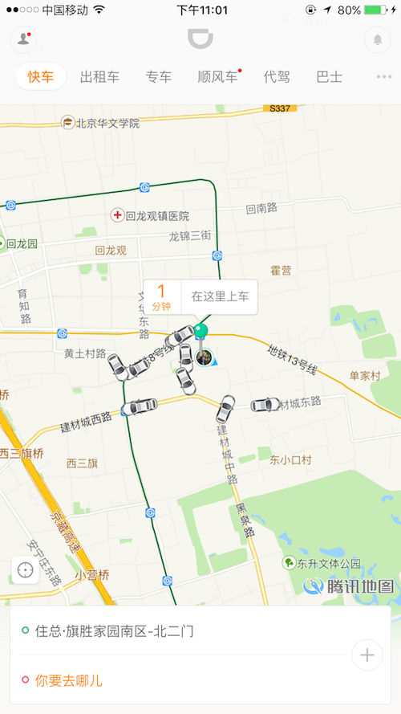
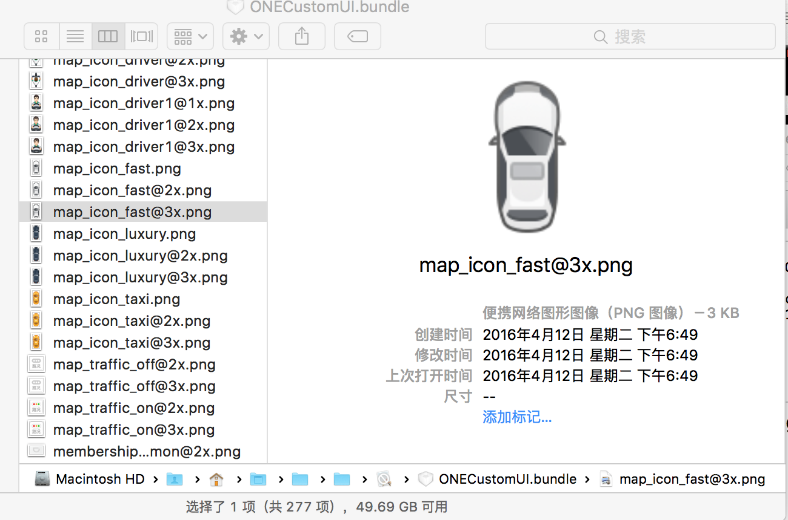
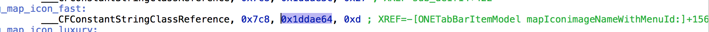
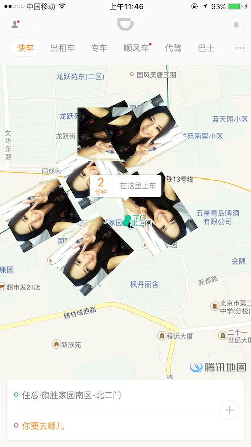

如何去改变滴滴出行里面快车的图标?
对滴滴的结构比较好奇, 想试着能不能将快车的图标更换下, 然后花了长达近一个早上研究…

正常的滴滴打车图
分析: 滴滴是个非常出色的打车软件, 用cycript看了首页的控制器是ONEFrostedContainerViewController, 看到里面有个QMMapView, 最重要的就是这个地图的View啦, 里面的核心绘图都是通过openGL来绘制, 查看mapView里面的各种delegate回调, 查看其他方法等
但是以上是思想不对, 饶了我一个多小时.. Action 重来
想想是不是可以替换图标??
PS: PP助手下载一个越狱版的ipa或者通过dumpdecrypted在已有安装好的App进行砸壳, 获取OneTravel(滴滴出行App)
- 第一步是去App找有没有这个图标, 进入app找文件真是种煎熬啊, 还好我手起刀落, 眼光厉锐, 找到了
ONECustomUI.bundle 里面确实有我想看到图标, “map_icon_fast”、”map_icon_taxi” 等等
找到图片后 然后通过hopper去搜索关键字
map_icon_fast, 发现在ONETabBarItemModel这个类里面有在使用的地方, 通过hopper看到了 - (id)mapIconimageNameWithMenuId:(id)arg1; 这个方法, 试试通过创建Tweak hook方法查看放回值
看到我想要看到的结果, 尝试修改了返回值, 并没有一丝改动. 好吧, 我就换个思路.
- 然后我留意到了这个方法
- (id)downloadImageWithStringUrl:(id)arg1 placeHolderImageName:(id)arg2 successBlock:(id)arg3;
猜想arg1是下载的图标的url(滴滴的快车、专车等等的图标会随着一些活动来改变, 本地有一份placeHolder作为备用), successBlock是成功的回调, 在这里我们可以不需要去修改block
换了一张苍老师的照片, 去改一下Tweak%hook ONETabBarItemModel
- (id)downloadImageWithStringUrl:(id)arg1 placeHolderImageName:(id)arg2 successBlock:(id)arg3
{
%log;
NSString *url = @"http://d.hiphotos.baidu.com/baike/w%3D268%3Bg%3D0/sign=2efbf31a47166d22387712927e186eca/6609c93d70cf3bc7e43db93dd500baa1cd112a25.jpg";// 苍老师性感写真
return %orig(url,arg2,arg3);
}
%end
重新编译Tweak
$ make package install
然后输入ssh的密码安装

修改后的滴滴打车图
成功后然后就是这张苍老师图了~
仅供学习~ 欢迎交流.